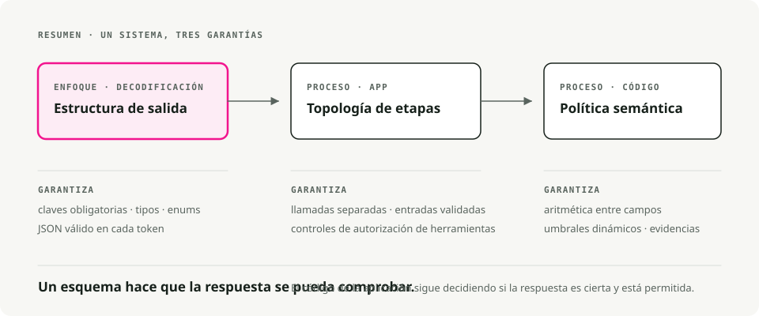
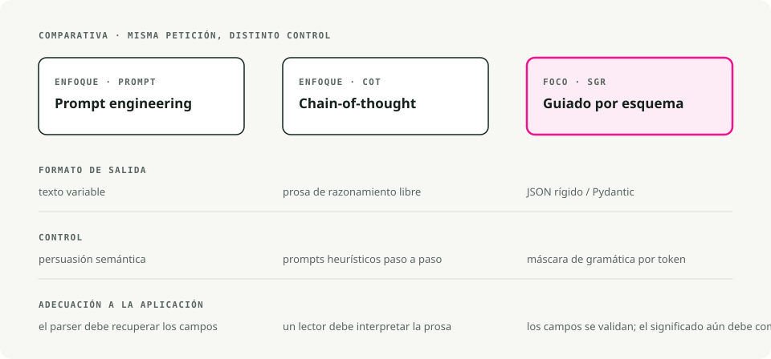
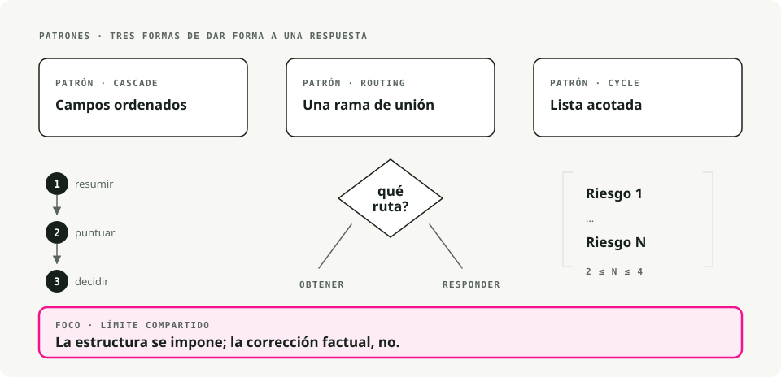
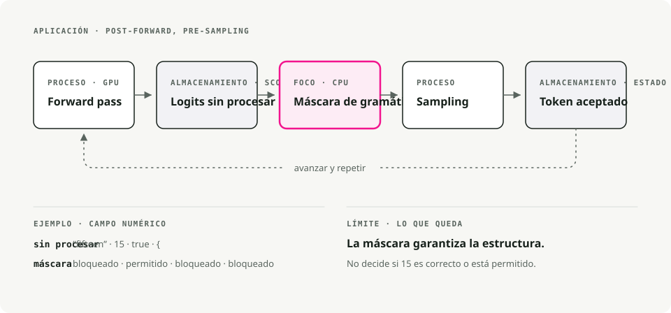
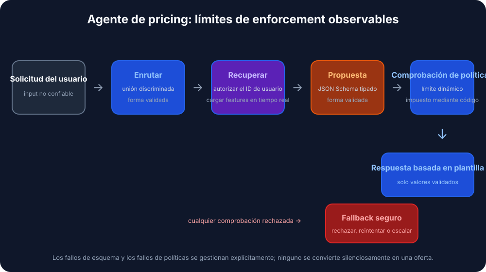

Traducción automática
Este artículo se tradujo automáticamente a partir de la versión original en inglés.
Razonamiento guiado por esquemas en vLLM: resultados estructurados con xgrammar y Pydantic
Un bucle de intentos repetidos es, en realidad, una admisión de fracaso. Significa: “Esperaba que el modelo devolviera JSON válido, pero no lo hizo; por eso volveré a intentarlo”. La mayor parte del código de agentes basados en LLM con el que he trabajado depende en gran medida de estos intentos repetidos, y aun así, los resultados en formato JSON suelen estar corruptos con tanta frecuencia que alguien acaba creando una alerta para detectarlo.
El Razonamiento guiado por esquemas (Schema-Guided Reasoning, SGR) omite este proceso de intentos repetidos al imponer el esquema a nivel de tokens. Se define la topología del razonamiento como un esquema Pydantic, y el motor de inferencia descarta cualquier token que pueda violar dicho esquema antes de realizar la muestreo. De esta manera, el resultado final es válido por diseño, y no gracias a intentos repetidos.
TL;DR. SGR emplea decodificación restringida para ajustar la salida de un LLM a un esquema Pydantic que usted controla. Al combinarlo con el backend xgrammar de vLLM, se obtiene JSON válido en todo momento, con una sobrecarga de latencia prácticamente nula.
¿Qué es el razonamiento guiado por esquemas?
El razonamiento guiado por esquemas es una técnica que Rinat Abdullin Redactado en 2024. En lugar de permitir que el modelo complete el texto de forma libre (lo cual puede resultar inconsistente o ambiguo), se le proporciona una plantilla estricta que define:
- los pasos que debe seguir, de modo que no pueda omitir el análisis;
- el orden de dichos pasos, para que el razonamiento se desarrolle desde los datos hasta la decisión;
- dónde debe concentrar su atención, de forma que la profundidad del análisis sea adecuada donde realmente importa.
Piénsalo como una lista de verificación cognitiva que el modelo debe cumplir.

Por qué es importante SGR
Al definir un esquema con campos como churn_analysis, margin_math, y max_discount_percentEl modelo debe rellenarlos en orden; no puede pasar directamente a la decisión de descuento sin haber realizado primero el análisis correspondiente.
Esto permite obtener:
- un razonamiento reproducible en ejecuciones repetidas
- resultados auditables, ya que cada paso es inspeccionable
- campos intermedios que se pueden evaluar contra un conjunto de datos de prueba
- modelos más pequeños y viables, puesto que el esquema impone las reglas que de otro modo el modelo tendría que aprender por sí mismo
- un aumento en la precisión del 5-10% comúnmente reportado en cargas de trabajo de producción
SGR vs Cadena de pensamiento vs ingeniería de prompts
Los tres enfoques difieren principalmente en la intensidad con la que restringen al modelo.

| Característica | Ingeniería de prompts | Secuencia de razonamiento | Razonamiento guiado por esquemas |
|---|---|---|---|
| Estructura de salida | Texto variable | Prosa libre | JSON/Pydantic rígido |
| Mecanismo de control | Persuasión semántica (“Por favor, genere JSON”) | Sugerencias heurísticas (“Pensemos paso a paso”) | Decodificación restringida (basada en gramática) |
| Flujo de razonamiento | El modelo determina | El desarrollador determina la topología del esquema. | |
| Auditablez | Bajo (requiere análisis) | Bajo (requiere leer el texto) | Alto (inspección a nivel de campo) |
| Integración | Difícil (análisis con regex) | Difícil (formato variable) | Trivial (deserialización de objetos nativos) |
| Tasa de errores | Alto (variabilidad de formato) | Moderado (alucinación de formato) | |
| Requisitos del modelo | Fuerte capacidad de seguimiento de instrucciones | Capacidad de razonamiento sólida | Funciona también con modelos más pequeños. |
Ingeniería de prompts: persuasión semántica
Please analyze the customer data and output your response as valid JSON
with the following structure: {"discount": <number>, "reason": <string>}
Be careful with the formatting!
Esperas que la comprensión del modelo sobre “JSON de salida” supere su tendencia a adoptar un estilo conversacional. Una actualización del modelo, un cambio en la temperatura o un ejemplo de few-shot diferente pueden invalidar tu parser.
Cadena de razonamiento: mejoramiento en el razonamiento, mismo problema de estructura
Let's think step by step:
1. First, I'll analyze the customer's churn risk...
2. Then I'll calculate the margin...
3. Therefore, I recommend a 15% discount.
El CoT mejora la precisión del razonamiento, pero empeora la estructuración. El resultado es un texto impredecible que resulta casi imposible de analizar de forma fiable. Por lo general, hay que realizar una segunda llamada al LLM solo para extraer los datos estructurados.
SGR: cadena estructurada de razonamiento
SGR mantiene la intuición del CoT de que el razonamiento intermedio mejora la precisión. Simplemente formaliza los pasos:
class PricingLogic(BaseModel):
# 1. Data Analysis (must complete before decision)
churn_analysis: str = Field(..., description="Analyze churn_probability")
financial_analysis: str = Field(..., description="Analyze cart_value and margin")
# 2. Math Enforcement (explicit calculation)
margin_math: str = Field(..., description="Calculate: 'Cart $X * Y% = $Z'")
# 3. Decision Constraint (bounded by prior analysis)
max_discount_percent: float = Field(..., description="Max allowed discount")
# 4. Final Output
offer_code: str
customer_message: str
El modelo no puede generar salida. max_discount_percent hasta que churn_analysis, financial_analysis, y margin_math Se llenan con los datos correspondientes. El esquema impone el orden de razonamiento.
Patrones SGR
SGR cuenta con tres patrones fundamentales que se combinan para formar flujos de trabajo más complejos.

1. Cascada: pasos secuenciales de razonamiento
La cascada impone un orden específico para el razonamiento. Es necesario completar cada campo antes de pasar al siguiente.
from pydantic import BaseModel
from typing import Literal, Annotated
from annotated_types import Ge, Le
class CandidateEvaluation(BaseModel):
"""Evaluate a job candidate with enforced reasoning order."""
# Step 1: Summarize (forces context awareness)
brief_candidate_summary: str
# Step 2: Rate (bounded integer)
rate_skill_match: Annotated[int, Ge(1), Le(10)]
# Step 3: Decide (constrained choices)
final_recommendation: Literal["hire", "reject", "hold"]
Aplicaciones adecuadas: evaluación de candidatos, clasificación de documentos, análisis de cumplimiento normativo, diagnóstico médico. El modelo debe ser capaz de redactar. brief_candidate_summary Antes de poder evaluar, debe hacerlo primero; y antes de poder recomendar, debe haber realizado la evaluación. No existe atajo. Union Tipos.
from pydantic import BaseModel
from typing import Literal, Union
class FeatureLookup(BaseModel):
"""Route to database lookup."""
rationale: str
tool_name: Literal["fetch_user_features"] = "fetch_user_features"
user_id: str
class GeneralResponse(BaseModel):
"""Standard response for non-pricing queries."""
tool_name: Literal["respond"] = "respond"
content: str
class RouterSchema(BaseModel):
"""The model must pick exactly ONE branch."""
action: Union[FeatureLookup, GeneralResponse]
Aplicaciones adecuadas: clasificación de intenciones, selección de herramientas, triaje de soporte técnico, despacho de múltiples agentes.
El Literal discriminadortool_name) hace que el modelo elija una única rama y rellene únicamente los campos que esa rama requiere.
3. Ciclo: razonamiento repetido con listas
El ciclo obliga al modelo a generar varios elementos, estableciendo límites en su cantidad.
from pydantic import BaseModel
from typing import List, Literal, Annotated
from annotated_types import MinLen, MaxLen
class RiskFactor(BaseModel):
explanation: str
severity: Literal["low", "medium", "high"]
class RiskAssessment(BaseModel):
"""Generate 2-4 risk factors."""
factors: Annotated[List[RiskFactor], MinLen(2), MaxLen(4)]
Aplicaciones adecuadas: evaluación de riesgos, extracción de problemas, llamadas a herramientas en paralelo, planificación multietapa. MinLen y MaxLen El límite obliga a incluir al menos 2 y como máximo 4 elementos. Combinado con el enrutamiento, así es como se envía un lote de llamadas a herramientas de ancho fijo.
Hacer que SGR funcione: decodificación restringida
Los patrones anteriores son simplemente esquemas Pydantic. Lo que los hace vinculantes es la decodificación restringida (también conocida como salida estructurada).
La decodificación restringida modifica el paso de generación de tokens. En lugar de permitir que el modelo elija libremente de su vocabulario, el motor aplica una máscara gramatical que bloquea los tokens que violarían el esquema. Esto ocurre en el motor de inferencia, no en el código de tu aplicación.
[!CONSEJO] SGR no requiere “modelos de razonamiento” como o1 o DeepSeek-R1. Funciona perfectamente con modelos ajustados mediante instrucciones, y especialmente bien con modelos derivados de aquellos basados en razonamiento.
Proveedores en la nube que lo soportan
La mayoría de los proveedores modernos de LLM ofrecen salidas estructuradas a través de la decodificación restringida:
| Proveedor | Soporte técnico |
|---|---|
| OpenAI | Salidas estructuradas (incluyendo Azure). GPT-5 utiliza JSON Schema a través de llguidance |
| Google/Gemini | JSON Schema Soporte disponible a partir de noviembre de 2025 (Pydantic y Zod). |
| Mistral | Salida estructurada personalizada |
| Grok | Salidas estructuradas para múltiples modelos |
| Fireworks AI | JSON Schema |
| Cerebras | Salidas estructuradas |
| OpenRouter | Depende del proveedor posterior; se mapea a JSON Schema. |
Motores de inferencia que lo soportan
En el caso de los modelos autohospedados, todos los motores principales disponen de un backend de decodificación con limitaciones:
| Motor | Backend |
|---|---|
| vLLM | xgrammar o orientación |
| SGLang | Esquemas, XGrammar, o orientación |
| TensorRT-LLM | Decodificación guiada |
| Ollama | Salidas estructuradas |
Por qué este artículo se centra en vLLM y xgrammar
Algunas razones:
- vLLM es el motor de inferencia de LLM de código abierto más ampliamente implementado, por lo que lo que desarrolles aquí se puede integrar con facilidad.
- xgrammar está implementado en C++ y añade una latencia insignificante.
- La API de vLLM es compatible con OpenAI, lo que hace que la migración desde proveedores cloud sea económica.
- xgrammar gestiona esquemas anidados complejos, uniones y estructuras recursivas.
La sección siguiente explica detalladamente cómo xgrammar aplica efectivamente un esquema a nivel de tokens.
Cómo aplica xgrammar los esquemas
Esta parte es fundamental comprenderla con precisión, ya que afecta directamente a la forma en que se depuran y se ajustan los flujos de trabajo de SGR.

Dónde tiene lugar el enmascaramiento
xgrammar modifica los logits de salida después del paso forward del modelo y antes de la muestreo. No modifica al propio modelo; simplemente filtra qué tokens pueden ser seleccionados.
Un bucle de inferencia estándar se ve así:
1. Input tokens → GPU Forward Pass → Logits (probability scores for all ~128K tokens)
2. Logits → Sampling (temperature, top-p, etc.) → Next Token
3. Repeat until done
xgrammar se colapsa entre los pasos 1 y 2:
1. Input tokens → GPU Forward Pass → Raw Logits
2. Raw Logits → xgrammar Logits Processor → Masked Logits
3. Masked Logits → Sampling → Next Token (guaranteed valid)
4. Repeat until done
El modelo sigue calculando su distribución de probabilidad completa en la GPU. A continuación, xgrammar se ejecuta en la CPU y aplica una máscara de bits a esos logits antes de realizar el muestreo. Los tokens inválidos tienen sus logits establecidos en -∞, lo que hace que su probabilidad sea exactamente 0 tras aplicar softmax.
Dos fases
xgrammar divide el trabajo en tiempo de compilación y tiempo de ejecución, y es precisamente esto lo que le confiere rapidez.
Fase 1: compilación de la gramática, una vez por esquema
# This happens once per schema
tokenizer_info = xgr.TokenizerInfo.from_huggingface(tokenizer)
grammar_compiler = xgr.GrammarCompiler(tokenizer_info)
compiled_grammar = grammar_compiler.compile_json_schema(schema_json)
Durante la compilación, xgrammar:
- Convierte el JSON Schema en una gramática libre de contexto.
- Construye un autómata de empuje (PDA), que es una máquina de estados con una pila para poder manejar estructuras anidadas como
{"a": {"b": {"c": ...}}}. - Se calculan de antemano qué tokens son válidos en cada posición gramatical. El resultado es la “caché de máscaras de tokens adaptativas”.
- Se clasifican los tokens como “independientes del contexto” (que pueden cachearse) o “dependientes del contexto” (que deben verificarse en tiempo de ejecución con respecto al estado de la pila).
[!NOTA] Aproximadamente el 99 % de los tokens resultan ser independientes del contexto y terminan siendo cacheados.Artículo sobre XGrammar). La mayoría de las comprobaciones de validez en tiempo de ejecución no son más que búsquedas en caché, y por eso xgrammar es rápido.
Fase 2: generación de máscaras en tiempo de ejecución, para cada token
En cada paso de generación:
- El
GrammarMatcherregistra la posición actual en la gramática. - Consulta la máscara precomputada para los tokens independientes del contexto.
- Ejecuta el PDA para verificar los tokens restantes que dependen del contexto.
- Los combina en una máscara de bits final y la aplica a los logits.
¿Por qué autómatas de desplazamiento hacia abajo y no expresiones regulares?
Debido al anidamiento. Una expresión regular (una máquina de estados finitos) no puede coincidir de forma fiable con estructuras como:
{ "user": { "profile": { "settings": { "theme": "dark" } } } }
La parte más complicada son los corchetes de cierre. }}}: es necesario recordar cuántos se han abierto. Un autómata de pila cuenta con una pila que permite hacer un seguimiento de esto, lo que le permite manejar profundidades de anidamiento arbitrarias. Por esa misma razón, xgrammar puede aplicar tipos de unión, objetos anidados y esquemas recursivos, áreas en las que los enfoques basados en expresiones regulares resultan insuficientes.
Un ejemplo concreto: generación de un campo de tipo float
Cuando el modelo está generando "max_discount_percent":, xgrammar sabe a partir del esquema que un float Sigue a continuación. La máscara:
- permite (la probabilidad se mantiene sin cambios):
0,1,2, ...,9,.,- - Bloques (probabilidad establecida en 0):
",{,[,true,false,null, y el resto del vocabulario de más de 128K palabras.
La pasada forward podría haber asignado una alta probabilidad a la palabra. "fifteen". Tras aplicar la máscara de xgrammar, ese token tiene una probabilidad de 0. El modelo debe generar dígitos.
Por qué un sobrecoste casi nulo
Tres razones:
- Ejecución paralela. El cálculo de la máscara en la CPU se superpone con el siguiente paso de propagación hacia adelante en la GPU. Mientras la GPU calcula los logit para el token N+1, la CPU calcula la máscara para el token N.
- Caché. La mayor parte del trabajo de validación se realiza en tiempo de compilación. En tiempo de ejecución, lo principal son las búsquedas en el caché.
- Implementación en C++. La ruta crítica está escrita en C++, no en Python, y la máscara se aplica directamente a los logit.
En las pruebas de rendimiento, xgrammar muestra un sobrecoste insignificante, y la generación estructurada puede ser ocasionalmente más rápida que la generación sin restricciones, ya que el vocabulario restringido hace que el muestreo sea más económico.
Implementación práctica con vLLM
La referencia es el sgr-gestor-de-descuentos proyecto: una pequeña demostración que utiliza SGR para la fijación dinámica de precios.

Estructura del proyecto
sgr/
├── agent.py # Main orchestration
├── models/
│ └── schemas.py # Pydantic SGR schemas
├── prompts/
│ ├── routing.py # Phase 1 prompts
│ └── pricing.py # Phase 3 prompts
├── store/
│ └── hybrid_store.py # Hot/Cold data retrieval
└── utils/
└── llm_client.py # LLM client wrapper with xgrammar
Paso 1: definir los esquemas
# sgr/models/schemas.py
from pydantic import BaseModel, Field
from typing import Literal, Union
# --- Phase 1: Routing (Union for branching) ---
class FeatureLookup(BaseModel):
"""Route to DB lookup if pricing context is needed."""
rationale: str
tool_name: Literal["fetch_user_features"] = "fetch_user_features"
user_id: str
class GeneralResponse(BaseModel):
"""Standard response for non-pricing queries."""
tool_name: Literal["respond"] = "respond"
content: str
class RouterSchema(BaseModel):
action: Union[FeatureLookup, GeneralResponse]
# --- Phase 2: Pricing Logic (Cascade for sequential reasoning) ---
class PricingLogic(BaseModel):
"""
Strict reasoning topology for dynamic pricing.
Fields are ordered to enforce the analysis→decision flow.
"""
# 1. Data Analysis (Reflection)
churn_analysis: str = Field(...,
description="Analyze churn_probability (High > 0.7).")
financial_analysis: str = Field(...,
description="Analyze cart_value and profit_margin.")
# 2. Hard Math Enforcement
margin_math: str = Field(...,
description="Calculate absolute profit: 'Cart $200 * 0.20 Margin = $40'.")
# 3. The Decision Constraint
max_discount_percent: float = Field(...,
description="Max allowed discount %. NEVER exceed margin.")
# 4. Final Output
offer_code: str = Field(..., description="Generated code (e.g. SAVE20).")
customer_message: str = Field(..., description="The final polite offer text.")
Paso 2: un cliente de LLM que activa xgrammar
# sgr/utils/llm_client.py
from openai import OpenAI
from pydantic import BaseModel
from typing import TypeVar
import json
T = TypeVar("T", bound=BaseModel)
class LLMClient:
"""Wrapper for vLLM with xgrammar-enforced structured generation."""
def __init__(self, base_url: str = "http://localhost:8000/v1"):
self.client = OpenAI(base_url=base_url, api_key="EMPTY")
self.model = self._get_available_model()
def _get_available_model(self) -> str:
"""Auto-detect the model running on vLLM server."""
try:
models = self.client.models.list()
if models.data:
return models.data[0].id
except Exception:
pass
return "Qwen/Qwen2.5-7B-Instruct"
def run_sgr(self, messages: list[dict], schema_class: type[T]) -> T:
"""Run inference with Schema-Guided Response constraints.
Uses vLLM's guided_json with xgrammar backend to enforce
strict schema constraints at the token generation level.
"""
schema_dict = schema_class.model_json_schema()
# Enhance system message with schema for model guidance
enhanced_messages = messages.copy()
if enhanced_messages and enhanced_messages[0]["role"] == "system":
schema_json = json.dumps(schema_dict, indent=2)
enhanced_messages[0] = {
"role": "system",
"content": (
enhanced_messages[0]["content"]
+ f"\n\nRespond with JSON matching this schema:\n{schema_json}"
),
}
# vLLM's guided_json with the xgrammar backend
completion = self.client.chat.completions.create(
model=self.model,
messages=enhanced_messages,
temperature=0.1, # Low temp for deterministic reasoning
extra_body={
"guided_json": schema_dict, # Pydantic schema as dict
"guided_decoding_backend": "xgrammar", # Hardware-enforced
},
)
raw_response = completion.choices[0].message.content
return schema_class.model_validate_json(raw_response)
[!NOTA] >
guided_jsonacepta un diccionario JSON Schema. Conguided_decoding_backend: "xgrammar", el LLM solo puede generar tokens que formen JSON válido y que se ajuste a su esquema.
Paso 3: orquestar al agente
# sgr/agent.py
from .models.schemas import PricingLogic, RouterSchema
from .prompts.routing import build_routing_prompt
from .prompts.pricing import build_pricing_context_prompt, ASSISTANT_FETCH_MESSAGE
from .store.hybrid_store import HybridFeatureStore
from .utils.llm_client import LLMClient
def pricing_agent(user_query: str, user_id: str) -> str:
"""Process a pricing query with three-phase SGR workflow."""
llm = LLMClient()
feature_store = HybridFeatureStore()
# Build conversation history
history = [
{"role": "system", "content": build_routing_prompt(user_id)},
{"role": "user", "content": user_query},
]
# --- Phase 1: Routing (Uses RouterSchema) ---
print(f"🤖 Processing: '{user_query}' for {user_id}")
decision = llm.run_sgr(history, RouterSchema)
print(f"📍 Routing decision: {decision.action.tool_name}")
if decision.action.tool_name == "respond":
return decision.action.content
# --- Phase 2: Context Retrieval ---
if decision.action.tool_name == "fetch_user_features":
print(f"🔍 Fetching features for {user_id}...")
context = feature_store.get_user_context(user_id)
if not context:
return "Error: User profile not found."
print(f" [Data] LTV: ${context.get('user_ltv')} | "
f"Margin: {context.get('cart_profit_margin', 0) * 100}%")
# Inject context into conversation
history.append({"role": "assistant", "content": ASSISTANT_FETCH_MESSAGE})
history.append({
"role": "user",
"content": build_pricing_context_prompt(
churn_prob=context.get("churn_probability", 0.5),
cart_val=context.get("current_cart_value", 100),
margin=context.get("cart_profit_margin", 0.2),
user_ltv=context.get("user_ltv", 0),
),
})
# --- Phase 3: SGR Logic Execution (Uses PricingLogic) ---
print("🧠 Calculating Offer (Schema Enforced)...")
offer = llm.run_sgr(history, PricingLogic)
# Audit log — the SGR benefit: explicit reasoning traces
print(f" [Audit] Math: {offer.margin_math}")
print(f" [Audit] Max Allowed: {offer.max_discount_percent}%")
return offer.customer_message
return "I'm sorry, I couldn't process your request."
if __name__ == "__main__":
response = pricing_agent("I want a discount or I'm leaving!", "user_102")
print(f"\n💬 Final Reply: {response}")
Paso 4: ejecutar vLLM con xgrammar
# Start vLLM server with xgrammar backend (default in recent versions)
python -m vllm.entrypoints.openai.api_server \
--model Qwen/Qwen2.5-7B-Instruct \
--port 8000
# Run the agent
uv run python -m sgr.agent
Salida de ejemplo
🤖 Processing: 'I want a discount or I'm leaving!' for user_102
📍 Routing decision: fetch_user_features
🔍 Fetching features for user_102...
[Data] LTV: $1,500 | Margin: 20%
🧠 Calculating Offer (Schema Enforced)...
[Audit] Math: Cart $200 * 0.20 Margin = $40
[Audit] Max Allowed: 15.0%
💬 Final Reply: We value your loyalty! Here's a special 15% discount
with code SAVE15. This reflects our appreciation for your continued
business with us.
El registro de auditoría muestra el funcionamiento real del modelo: calculó el margen (40 $ en un carrito de 200 $ con un 20 % de comisión) y estableció un límite para el descuento, de modo que la oferta se mantuviera dentro de los requisitos de rentabilidad.
Mejores prácticas
Diseño del esquema
- Ordenar los campos según el flujo de razonamiento. Los campos de análisis deben ir antes que los campos de decisión.
- Escribir descripciones descriptivas.
FieldDescripciones. Guian la atención del modelo tanto como el nombre del campo. - Restringir con
LiteralyAnnotated. UtilizarLiteral["a", "b"]para enums yAnnotated[int, Ge(1), Le(10)]Para los límites de validez. - Mantenga los esquemas enfocados: un esquema por fase de razonamiento, y luego compóngalos mediante múltiples llamadas.
Configuración de vLLM
- Utilice una temperatura baja (0.1-0.3) para lograr un razonamiento determinista.
- Deje que xgrammar se encargue de la estructura; no intente imponer instrucciones de formato en el prompt.
- Vigile el uso de tokens. SGR suele utilizar menos tokens que CoT, ya que no genera texto prolijo.
Consideraciones de producción
- Versione sus esquemas de la misma manera que versiona las APIs.
- Incluso con SGR, los errores de red y del servidor siguen requiriendo un manejo adecuado.
- Registre las salidas brutas de SGR con el fin de garantizar el cumplimiento normativo y facilitar la depuración.
- Pruebe con casos límite para asegurarse de que el esquema sea válido en los extremos.
Conclusión
SGR es lo que permite pasar de un sistema que “funciona en una demostración” a uno que “funciona en producción”. Defina la topología de razonamiento en Pydantic, deje que xgrammar la aplique en el momento de la decodificación, y el resultado será:
- siempre válido, sin bucles de intentos repetidos ni fallos de análisis
- auditable a nivel de campos
- utilizable con modelos más pequeños, ya que estos ya no tienen que gestionar el formato por sí solos
- más económico en términos de recursos, puesto que se emplean menos tokens, menos intentos y modelos más reducidos
El sgr-gestor-de-descuentos Prueba los ejemplos de código de esta publicación conectándolos a un servidor vLLM real. Clona el proyecto y comienza a adaptar los esquemas a tu propio flujo de trabajo.
Conclusiones clave
- El razonamiento guiado por esquemas hace que la topología del razonamiento sea explícita, en lugar de depender de que el modelo siga instrucciones escritas en prosa.
- La decodificación restringida evita la generación de JSON inválido en tiempo real, lo cual resulta más eficiente que validar y volver a intentarlo posteriormente.
- Coloca los campos de análisis antes que los campos de decisión cuando el esquema debe obligar al razonamiento antes de producir la salida.
- Utiliza SGR cuando el código posterior depende de una estructura definida, y no cuando el resultado esperado es texto en prosa sin formato fijo.
Referencias
Marco SGR Razonamiento guiado por esquema (SGR) — El framework original de Rinat Abdullin Patrones SGR — Patrones de cascada, enrutamiento y ciclo
xgrammar
- XGrammar: Motor de generación estructurada flexible y eficiente para modelos de lenguaje grande — Yixin Dong y colaboradores, arXiv:2411.15100 (artículo técnico con pruebas de rendimiento) xgrammar en GitHub — Biblioteca de generación estructurada rápida y flexible Documentación de xgrammar — Documentación oficial con guía de inicio rápido xgrammar: Guía de inicio rápido — Introducción a xgrammar
- Lograr una generación estructurada eficiente con XGrammar — Artículo del blog de MLC sobre los detalles internos de xgrammar
vLLM
- vLLM: Salidas Estructuradas — Documentación oficial
Proyecto de demostración
- sgr-gestor-de-descuentos — Demo en funcionamiento con todos los ejemplos de código de esta publicación